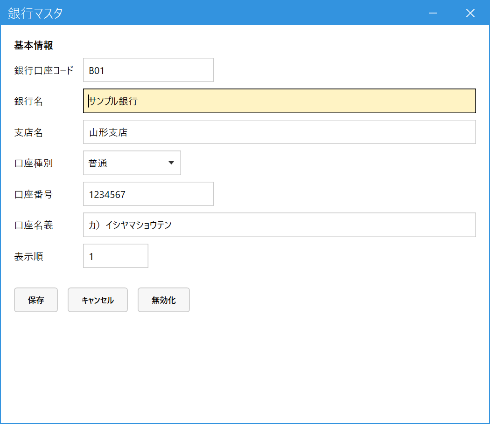

銀行口座を登録する（銀行マスタ）
こんなときに使います
自社の入金先の口座を登録します。登録した口座は、次の2か所で使います。
・入金入力で、振込の入金先口座を選ぶとき
・得意先マスタで、請求書に印字する振込先を選ぶとき（得意先ごとに最大2件）
自社の入金先の口座を登録します。登録した口座は、次の2か所で使います。
・入金入力で、振込の入金先口座を選ぶとき
・得意先マスタで、請求書に印字する振込先を選ぶとき（得意先ごとに最大2件）
1.口座を登録する
メインメニューの「マスタ管理」の中の「銀行マスタ」を開きます。銀行口座コードを入れて Enter（登録済みなら内容が出ます。未登録なら新規登録として入力を続けます）。

- 銀行口座コード：必須。自社で付ける管理用のコードです。
- 銀行名・支店名：請求書の振込先に印字されます。
- 口座種別：普通・当座などを選びます。
- 口座番号。
- 口座名義：通帳どおりの名義（カナ）を入れます。
- 表示順：一覧や選択肢に出る順番です（小さい数字が先）。
- 保存で登録。使わなくなった口座は無効化します（過去の入金は残ります）。